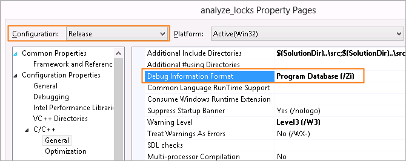

Before you start analyzing
your application for locks, do the following:
Before you start analyzing
your application for locks, do the following:
Note
- The steps below are provided for Microsoft Visual Studio* 2013. Steps for other versions of Visual Studio IDE may slightly differ. See online help for details.
- Steps provided by this tutorial are generic and applicable to any application. You may choose to follow the proposed workflow using your own application.
Get Software Tools
You need the following tools to try tutorial steps yourself using the tachyon sample application:
- Intel® VTune™ Amplifier, including sample applications
- zip file extraction utility
- Supported compiler (see Release Notes for more information)
Acquire Intel VTune Amplifier
If you do not already have access to the VTune Amplifier, you can download an evaluation copy from http://software.intel.com/en-us/articles/intel-software-evaluation-center/.
Note
This document focuses on using the VTune™ Amplifier in Intel® Parallel Studio XE Professional Edition. You may see minor differences if you installed a different Intel product. For more information on product capabilities in your installed product, see the product-specific supplemental documentation in <install-dir>/<Intel_product>/documentation/.
Install and Set Up VTune Amplifier Sample Applications
- Copy the
tachyon_vtune_amp_xe.zip file from the
<install-dir>\samples\<locale>\C++\
directory to a writable directory or share on your system.
Note
The default installation path for the VTune Amplifier XE is [Program Files]\IntelSWTools\VTune Amplifier XE <version>. For the VTune Amplifier for Systems, the default <install_dir> is [Program Files]\IntelSWTools\system_studio_<version>\VTune Amplifier for Systems.
- Extract the sample from the .zip file.
Note
- Samples are non-deterministic. Your screens may vary from the screen captures shown throughout this tutorial.
- Samples are designed only to illustrate the VTune Amplifier features; they do not represent best practices for creating code.
Choose a Project
Choose a project with the analysis target in the Visual Studio IDE as follows:
From the Visual Studio menu, select File > Open > Project/Solution....
The Open Project dialog box opens.
In the Open Project dialog box, browse to the location you used to unzip the tachyon_vtune_amp_xe.zip file and select the tachyon_vtune_amp_xe.sln file.

The solution is added to Visual Studio and shows up in the Solution Explorer.
In the Solution Explorer, right-click the analyze_locks project and select Set as StartUp Project.
analyze_locks appears in bold in the Solution Explorer.
Configure the Microsoft* Symbol Server
Configure the Visual Studio environment to download the debug information for system libraries so that the VTune Amplifier can properly identify system functions and classify/attribute functions.
Go to Tools > Options....
The Options dialog box opens.
From the left pane, select Debugging > Symbols.
In the Symbol file (.pdb) locations field, make sure the Microsoft Symbol Servers location is selected. Otherwise, click the Add button, specify the following address: http://msdl.microsoft.com/download/symbols, and make sure the added address is checked.
In the Cache symbols in this directory field, specify a directory where the downloaded symbol files will be stored.

Click Ok.
Verify Optimal Compiler/Linker Options
Configure Visual Studio project properties to generate the debug information for your application so that the VTune Amplifier can open the source code.
Select the analyze_locks project and go to Project > Properties.
From the analyze_locks Property Pages dialog box, select Configuration Properties > General and make sure the selected Configuration (top of the dialog) is Release.
From the analyze_locks Property Pages dialog box, select C/C++ > General pane and specify the Debug Information Format as Program Database (/Zi).

From the analyze_locks Property Pages dialog box, select Linker > Debugging and set the Generate Debug Info option to Yes (/DEBUG).

Click Ok.
Build the Target in the Release Mode
Configure Visual Studio project properties to generate the debug information for your application so that the VTune Amplifier can open the source code.
Go to the Build > Configuration Manager... dialog box and select the Release mode for your target project.
From the Visual Studio menu, select Build > Build analyze_locks.
The analyze_locks.exe application is built.
Note
The build configuration for tachyon may initially be set to Debug, which is typically used for development. When analyzing performance issues with the VTune Amplifier, you are recommended to use the Release build with normal optimizations. In this way, the VTune Amplifier is able to analyze the realistic performance of your application.
Create a Performance Baseline
From the Visual Studio menu, select Debug > Start Without Debugging.
The analyze_locks.exe application runs in multiple sections (depending on the number of CPUs in your system).
Note
Before you start the application, minimize the amount of other software running on your computer to get more accurate results.

Note the execution time displayed in the window caption. For the analyze_locks.exe executable in the figure above, the execution time is 16.848 seconds. The total execution time is the baseline against which you will compare subsequent runs of the application.
Note
Run the application several times, note the execution time for each run, and use the average number. This helps to minimize skewed results due to transient system activity.
Launch the VTune Amplifier from Microsoft Visual Studio
To run an analysis from the Visual Studio IDE, click the
 New Analysis button on the
VTune Amplifier toolbar. The VTune Amplifier uses your current project as the
target application and the
tachyon directory as the working directory where
the analysis results will be stored.
New Analysis button on the
VTune Amplifier toolbar. The VTune Amplifier uses your current project as the
target application and the
tachyon directory as the working directory where
the analysis results will be stored.